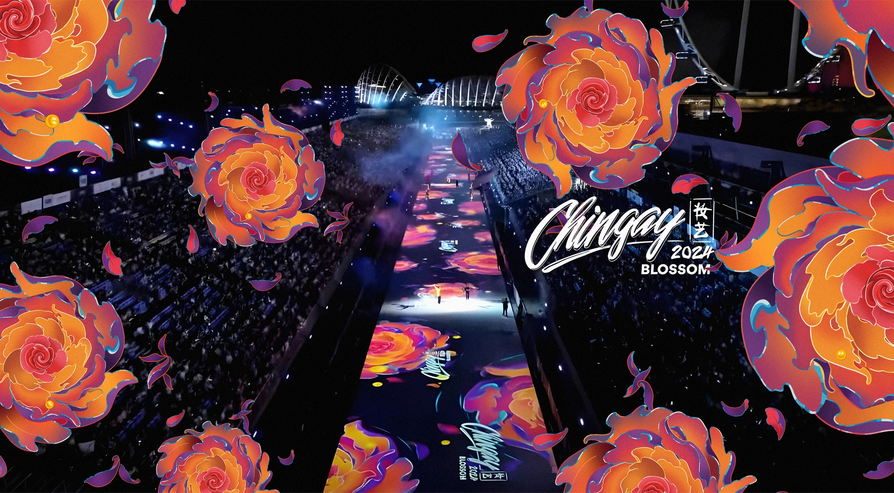
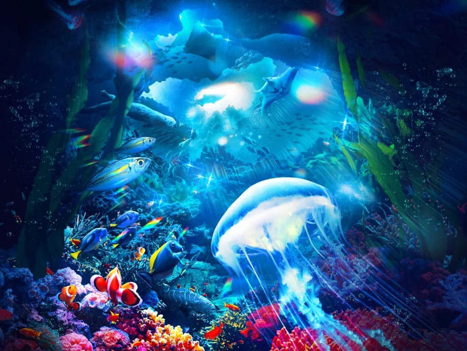
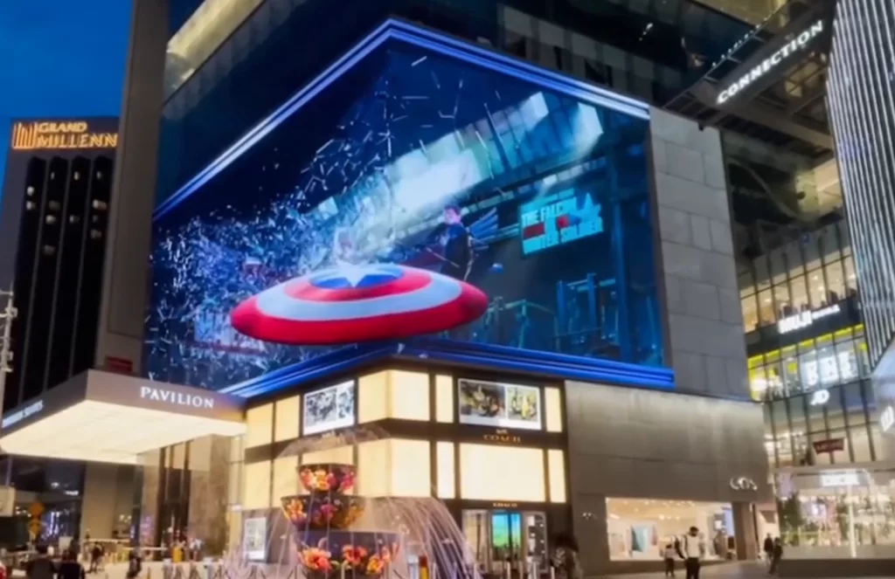
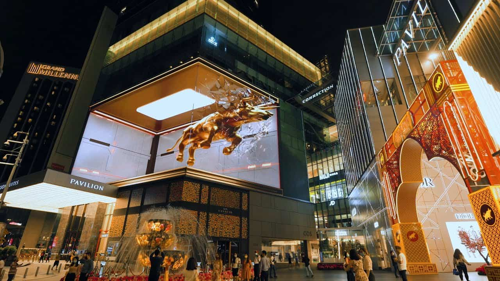

Singapore · Live experience · 2024
Chingay Blossom
A 230-metre floor projection demonstrates public-scale execution; contract value and margin are undisclosed.
Strategy & commercial review · SGX: OMK
Award-winning work. Distressed economics.
Vividthree has transformed from a VFX studio into a digital-content, PR and music-venue group. Its creative credentials are real; its operating scale, balance sheet and audit trail are not yet investable.

01 · Evidence · Research score
Vividthree sits in the Fragile band. Growth optionality contributes almost half the score; Financial Strength contributes just 1.8 points out of 40.
The 37-point gap to Kingsmen is balance-sheet and operating evidence, not a judgement on the quality of Vividthree's creative output.
PR, immersive media and venue options create possibility. Negative equity, cash burn and two audit disclaimers overwhelm it.
The next audit opinion matters more than the next MOU. Positive working capital and an unmodified audit can move the score; another funding failure can erase what remains.
| Component | Weight | Rating /5 | Points | Assessment |
|---|---|---|---|---|
| Five-year revenue CAGR | 6 | 0 | 0.0 | Revenue fell at a 10.1% CAGR. |
| Net profit margin | 7 | 0 | 0.0 | Five straight losses; FY2026 net margin was negative 502%. |
| ROIC / ROE | 9 | 0 | 0.0 | Negative returns and negative equity. |
| Cash-flow stability | 9 | 1 | 1.8 | Operating cash flow was positive in two of five years. |
| Balance-sheet strength | 9 | 0 | 0.0 | S$0.09m cash, S$1.94m borrowings and negative equity. |
| Component | Weight | Rating /5 | Points | Assessment |
|---|---|---|---|---|
| Brand recognition | 2 | 2 | 0.8 | Award-winning VFX and immersive projects. |
| Competitive advantage | 7 | 0 | 0.0 | No evidence of durable pricing power or returns. |
| Market share | 4 | 1 | 0.8 | A micro player across content and PR. |
| Customer relationships | 5 | 2 | 2.0 | Recognisable clients, but no recurring order book. |
| Geographic reach | 2 | 3 | 1.2 | Malaysia, Singapore, Japan and other markets. |
| Component | Weight | Rating /5 | Points | Assessment |
|---|---|---|---|---|
| Industry growth | 6 | 2 | 2.4 | Media and location-based entertainment are growing. |
| Technology adoption | 4 | 2 | 1.6 | VFX, projection, VR and anamorphic displays. |
| New-market expansion | 6 | 2 | 2.4 | *SCAPE venues add a new model with unproven economics. |
| Revenue diversification | 5 | 3 | 3.0 | Digital content, PR and out-of-home entertainment. |
| Strategic partnerships | 4 | 2 | 1.6 | Partnerships exist, but mm2 Asia adds counterparty risk. |
| Component | Weight | Rating /5 | Points | Assessment |
|---|---|---|---|---|
| Economic resilience | 3 | 0 | 0.0 | Loss-making before and after demand shocks. |
| Customer diversification | 4 | 2 | 1.6 | Projects span clients, but no recurring base is disclosed. |
| Technology resilience | 3 | 2 | 1.2 | Technical capability exists; the economics remain weak. |
| Regulatory resilience | 2 | 4 | 1.6 | Diversified jurisdictions, with Catalist compliance pressure. |
| Operational resilience | 3 | 1 | 0.6 | Funding, partner and key-person risks are material. |
02 · Evidence · The group
The original VFX studio, a 30%-owned PR firm and a new venue strategy create breadth. None yet produces enough group-level gross profit to carry fixed costs.
Campaigns, immersive content, PR retainers and music audiences.
Project revenue, with no disclosed order book or recurring revenue base.
S$0.98m gross profit minus S$2.20m of overhead before finance costs.
Gross profit failed to cover overheads in every one of the last five years.
03 · Exhibit · Portfolio and segments
Each exhibit is labelled for economic relevance: what the project proves, and what the financial statements still do not.
A 230-metre floor projection demonstrates public-scale execution; contract value and margin are undisclosed.

RWS aquarium work connects VFX capability to destination media, but not to recurring ownership economics.

A marquee campaign validates regional client access and anamorphic-content capability.

High-visibility work generated project leads; it did not create a disclosed recurring base.
Elliot Communications, in which Vividthree owns 30%, supplied about 60% of FY2026 revenue.
The original studio generated only about one-third of group overheads.
04 · Evidence · Financials
The five-year picture is not one bad year. Vividthree lost S$31.8m in aggregate and ended FY2026 with negative equity.
Cost cuts narrowed the loss before write-downs from S$2.53m to S$0.96m. That is progress, but not break-even.
After S$1.31m of overhead reductions.
Films S$7.23m, goodwill S$0.64m and credit S$0.55m.
About five times FY2026 revenue.
05 · Evidence · Funding and dilution
Vividthree entered the market at S$0.25. The latest placements and convertible bonds were priced near S$0.016, while the share price stood at S$0.010.
Both 2026 bonds convert at S$0.0165. If the shares do not recover, S$2.0m may instead fall due in mid-2028.
06 · Evidence · Market and peers
A high percentage on a tiny revenue base does not fund a public company. Vividthree's S$0.98m gross profit cannot cover S$2.20m of overhead.
At S$0.010, market value is about S$6m and enterprise value about S$7.9m, or 4.2 times FY2026 revenue. The multiple is not cheap when revenue is shrinking and equity is negative.
07 · Evidence · Demand economics
PR work is short-cycle, digital experience projects are lumpy and venues require upfront fit-out. The clocks differ; the monthly payroll does not.
Elliot supplied about 60% of FY2026 revenue across Singapore and Malaysia.
VFX, launches and immersive displays convert through project awards.
*SCAPE Music Studio is open; Livehouse was due in Q4 2026.
S$2.20m of annual overhead remains even after a 37% cut.
The annual cash-cost hurdle before growth investment.
FY2026's strongest percentage in five years.
About 2.4 times FY2026 revenue.
At a 50% margin, each extra S$1m of revenue cuts the loss by about S$0.5m.
08 · Decision · Strategic frameworks
Twenty years of credits, Elliot's client base and three-year *SCAPE operator rights are useful assets. None yet protects group cash flow.
Content, VFX and PR compete with larger agencies and specialist studios.
Project clients can tender work and impose payment terms.
Creative talent and venue staff must be retained before revenue arrives.
Production tools are increasingly accessible and portfolios travel globally.
Clients can choose traditional media, in-house teams or lower-cost digital formats.
Exposed: every opportunity that requires cash before delivery, especially venue fit-out, staffing and the 2028 bond maturities.
09 · Decision · Risk matrix
Select a risk to inspect its trigger and mitigation. The matrix uses written labels as well as position so meaning does not depend on colour.
10 · Decision · Strategy & outlook
Funding comes first. A venue launch without liquidity or cost discipline would add activity without solving the business.
Raise S$3-4m of equity and clear overdue bills.
Open Livehouse and report monthly use and contribution.
Drop subscale lines and size overheads to what the portfolio earns.
File on time and disclose segment cash flow and Elliot economics.
Interactive FY2027 scenario
Revenue recovers 18% with a 45% margin; venue contribution is neutral and the group remains loss-making.
Illustrative model
Funding need ~S$2.3m
Current score
The *SCAPE plan may be strategically sensible. It cannot carry an S$8m asset write-down history, negative equity and a near-empty cash balance without fresh capital and much tighter disclosure.
Sources & evidence
Evidence grade C. The audit disclaimer, unresolved financing verification, absent order book and limited segment cash-flow disclosure materially constrain confidence.
Research standard
Figures are in Singapore dollars and financial years end 31 March unless stated. Market data are as of 8 October 2026. This is an independent strategy and commercial review based on public information and the supplied research, not an investment recommendation or price target.
Project images are presented as analytical exhibits; image rights remain with their respective owners.